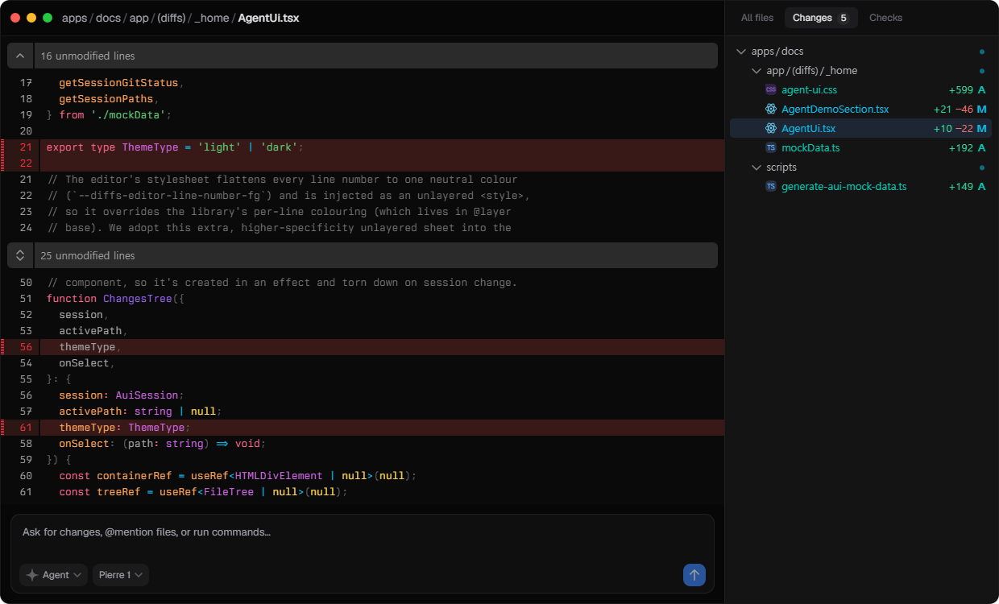
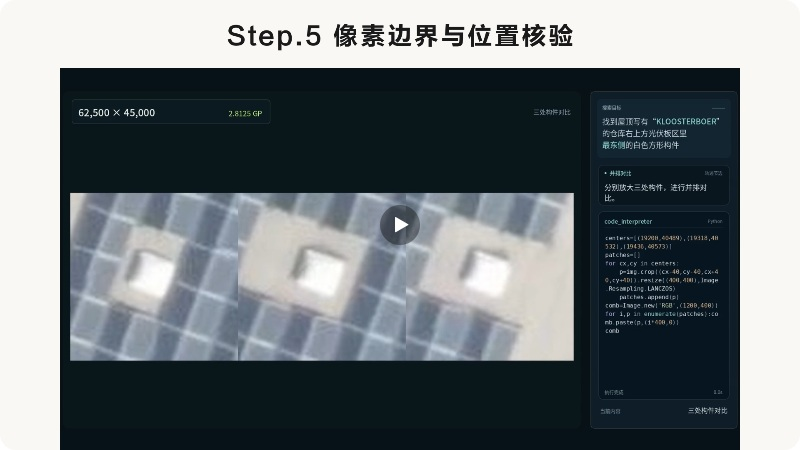

AI NEWS ISSUE 38
OpenAI의 Pierre 인수 계획, 코드 검토에서 저장까지
OpenAI의 Pierre 인수 계획과 Codex의 Git 저장소 통합 방향을 살펴봅니다. Conductor Cloud 종료 일정, Linux 커널 보안 연구, Tencent Hy4와 CodeQL 2.27.4도 함께 읽습니다.
AT A GLANCE
30초 요약
- OpenAI와 Pierre Codex는 이미 Pierre의 파일 탐색·코드 비교 도구를 씁니다. Git 저장 서비스의 기능을 들이는 일은 인수가 끝난 뒤의 계획입니다.
- Meta와 Conductor 여러 코딩 에이전트의 작업을 나눠 관리하던 Conductor가 Meta에 합류합니다. 기존 Cloud 사용자는 11월 20일 전에 작업 기록을 옮겨야 합니다.
- Linux 커널과 CodeQL OpenAI는 격리 환경에서 어떤 취약점이 실제 권한 상승으로 이어지는지 시험했고, GitHub는 이미 안전하게 처리한 코드에 뜨는 경고를 줄였습니다.
- Tencent Hy4 화면과 도표를 읽고 프로그램을 조작하는 정식판이 나왔습니다. 회사가 발표한 업무 평가 점수와 실제 현장의 완료율은 구분해서 읽습니다.
자료 확인 2026년 11월 5일 한국시간 기준입니다. 발표일은 각 원문 표기를 따랐습니다. 연구 수치와 제품 평가는 발표 주체의 결과입니다.
01 / OPENAI × PIERRE
Codex에 이미 들어온 도구와 앞으로 들일 저장소
Codex 앱에서 폴더를 펼쳐 파일을 찾고, 고치기 전후의 코드를 나란히 읽을 때 이미 Pierre의 도구를 쓰고 있습니다. 파일 탐색은 Trees, 코드 비교는 Diffs가 맡습니다. OpenAI는 11월 4일 Pierre 인수 계획과 함께 Code Storage의 기능을 Codex에 통합하겠다고 밝혔습니다. Code Storage는 앱이 Git으로 코드를 저장하고 변경 이력을 추적할 수 있게 해주는 서비스입니다. OpenAI 한국어 발표 ↗


거래에는 규제 승인 등 종결 조건이 남았습니다. 그때까지 두 회사는 독립적으로 운영됩니다. OpenAI는 거래 후에도 Pierre의 오픈소스 프로젝트와 기존 고객의 Code Storage 이용을 지원하겠다고 밝혔습니다.
에이전트 여럿이 각자 브랜치에 변경을 올리면, 자동 검사도 같은 커밋을 반복해서 내려받습니다. OpenAI는 늘어난 읽기·쓰기 요청을 감당하려고 Git 저장소의 내부 처리 시스템인 Pando를 만들고 11월 2일 소개했습니다. Pando는 이미 회사의 통합 저장소에서 사용 중입니다. Pando 기술 설명 ↗
02 / META × CONDUCTOR
Conductor Cloud 종료 전에 작업 기록을 옮깁니다
Conductor는 11월 4일 Meta 합류를 발표했고, Meta도 인수 사실을 확인했습니다. Conductor에서는 같은 프로젝트의 버그 수정을 Codex에, 다른 기능의 테스트 작성을 Claude Code에 나눠 맡길 수 있습니다. 작업마다 브랜치와 파일, 터미널을 따로 두고, 마지막에 사람이 변경을 검토해 합칩니다. Conductor 작업공간 문서 ↗ · Meta 확인 보도 ↗
기존 사용자는 아래 일정에 맞춰 Cloud의 작업공간과 대화 기록을 옮겨야 합니다. 합류 발표와 이전 안내 ↗
- 11월 4일
- 신규 가입과 앱 다운로드를 중단했습니다.
- 11월 13일
- Cloud가 읽기 전용으로 바뀝니다. 지난 대화를 읽고 내보낼 수 있지만 새 메시지를 보낼 수는 없습니다.
- 11월 20일
- Cloud가 종료되고 데이터 삭제가 시작됩니다. 그 전에 작업공간의 Transfer to local로 Mac에 옮기거나, Settings → Account → Export data에서 전체 기록을 내보낼 수 있습니다.
- 2027년 초까지
- 로컬 앱은 새 모델과 중요 오류 수정을 지원할 예정입니다. 후속 제품의 구체적인 기능은 공개하지 않았습니다.
작업공간을 나눠도 두 변경이 잘 맞는지는 함께 확인해야 합니다. 예를 들어 한 브랜치에서 오류 응답 형식을 바꾸고 다른 브랜치에서는 예전 형식으로 화면을 만들었다면, 합친 뒤 화면이 제대로 동작하지 않을 수 있습니다. 어떤 변경들을 함께 검사했고 누가 확인했는지도 코드와 함께 남길 필요가 있습니다.
03 / OPENAI SECURITY RESEARCH
2,308개 후보 중 실제 권한 상승을 보인 것은 948건입니다
OpenAI는 10월 중순 Linux 커널을 대상으로 아직 출시하지 않은 보안 모델을 시험하고 11월 4일 결과를 공개했습니다. 코드를 읽어 의심되는 곳을 찾은 뒤, 격리된 가상머신에서 오류를 재현하고 일반 사용자가 관리자(root) 권한까지 얻을 수 있는지 확인했습니다. OpenAI 연구 원문 ↗
- 코드에서 추린 후보2,308
- 실행해서 취약점을 재현1,724
- 로컬 권한 상승을 입증948
948건은 패치가 적용된 수가 아닙니다. 연구진은 재현 자료와 수정 후보를 검토한 뒤 중요한 문제부터 커널 개발자에게 전달했습니다. 스캔과 수동 분석에 걸린 열흘 사이에 이미 61건은 커널 본류에서 수정됐고, 43건은 패치 반영을 준비 중이었으며, 299건은 공개 보고·논의 중이었습니다. 같은 문제를 다시 보고하기 전에 최신 코드에서도 재현되는지 확인해야 하는 이유입니다.
이번 실행에 썼다고 밝힌 API 크레딧은 121만 3,430달러(약 16억 3천만 원)입니다. 전체 금액을 948건으로 나누면 권한 상승 입증 한 건에 약 1,280달러입니다. 탐색과 실패한 시도까지 포함한 한 차례 연구의 평균이지, 취약점 하나를 찾아 고쳐주는 서비스 가격은 아닙니다. 원화는 11월 4일 종가인 달러당 1,341.15원으로 환산했습니다. 달러/원 환율표 ↗
04 / TENCENT HY4
화면을 읽고 프로그램을 조작하는 Hy4
Tencent는 11월 4일 Hy4 정식판에 시각 이해와 컴퓨터 조작 기능을 추가했다고 밝혔습니다. 도표나 이미지의 세부 내용을 읽고, 작업에 따라 명령줄이나 화면 인터페이스를 쓸 수 있습니다. 업무용 WorkBuddy, 개발 도구 CodeBuddy, Tencent Cloud TokenHub에서 이용할 수 있다고 안내했습니다. Tencent 발표문 ↗

Tencent가 발표한 WorkBuddy 업무 평가 결과는 평균 83.18점, 과제 통과율 96.15%입니다. 이 통과율은 회사의 평가 환경에서 나온 값으로, 실제 고객사의 업무 자동 완료율과는 구분해야 합니다. 별도의 금융 평가에는 금융 전문가 213명이 참여해 579개 과제의 수행 결과를 평가했습니다.
Hy4 Preview의 가중치는 8월에 공개됐습니다. Tencent는 11월 4일 발표에서 정식판의 가중치와 시스템 카드를 추후 공개하겠다고 밝혔습니다. Preview 저장소 ↗ · Tencent Cloud 적용 안내 ↗
05 / GITHUB CODEQL
안전하게 처리한 입력을 더 잘 알아봅니다
사용자가 보낸 이름에 줄바꿈이 들어 있고 서버가 그 값을 그대로 기록하면, 한 요청이 로그에서는 두 줄로 보일 수 있습니다. 코드가 줄바꿈을 처리해 한 줄로 기록하더라도, 분석 도구가 이 과정을 알아보지 못하면 불필요한 경고를 낼 수 있습니다. 개발자는 이미 막아둔 문제를 다시 조사하게 됩니다. GitHub의 로그 삽입 예제 ↗
GitHub는 11월 2일자 CodeQL 2.27.4의 변경점을 4일에 소개했습니다. Java/Kotlin의 로그 삽입 규칙은 JDK·Apache Commons·Guava·OWASP Java Encoder·Spring의 입력 정제 함수와 보호 조건을 더 인식합니다. Rust에서는 로그와 메모리 할당 관련 일부 오탐을 줄였고, C/C++에서는 개발자가 의도한 바이트 버퍼 포인터 연산에 더는 같은 경고를 내지 않습니다. 버전별 변경 기록 ↗
GitHub.com의 코드 스캔에는 새 버전이 자동 배포되며, GitHub Enterprise Server에는 3.24부터 포함될 예정입니다. GitHub 배포 안내 ↗
OUR VIEW / 헬로우 휴먼의 관점
다음 사람이 같은 검사를 처음부터 하지 않으려면
Git에는 무엇을 고쳤는지가 남고, 에이전트의 대화에는 왜 그렇게 고쳤는지가 남습니다. 검토자가 변경을 승인하려면 그 코드로 어떤 검사를 통과했는지도 알아야 합니다.
우리 모임이라면 변경 한 건에 요청, 검사한 커밋, 재현 결과, 사람의 승인을 함께 남기는 것부터 해보겠습니다. 아래 실험에서는 이 기록을 모아두면 다음 검토자가 확인하는 데 드는 시간이 줄어드는지 살펴봅니다.
OUR LAB / 아직 실행하지 않은 실험 제안
통과 기록이 어느 커밋의 것인지 확인해 봅니다
배송 로그 사례는 ⑤ GitHub CodeQL 소식에서 아이디어를 얻었습니다. 사용자가 입력한 줄바꿈 때문에 요청 하나가 로그에 두 줄로 찍힐 수 있다는 사례를 가상의 배송 서비스에 옮겨 봅니다.
검사 방법은 ③ Linux 커널 연구에서 가져왔습니다. 연구진이 찾은 문제 중에는 분석하는 동안 이미 고쳐진 것도 있었습니다. 그래서 이번 실험에서도 코드가 바뀌면, 앞선 코드가 검사를 통과했더라도 지금 승인하려는 코드를 다시 검사합니다.
에이전트에 ‘배송 메모에 줄바꿈이 있어도 한 요청은 감사 로그 한 줄로 남겨주세요’라고 요청합니다. 첫 줄에 ‘문 앞에’, 둘째 줄에 ‘두고 가세요’라고 적은 메모를 넣습니다. 원래 메모는 두 줄 그대로 보존하고, 로그에만 줄바꿈을 눈에 보이는 문자로 기록해야 합니다. 배송 요청을 받았을 때와 거절했을 때 모두 같은 기준으로 확인합니다.
검사 결과에 작업 ID와 커밋을 붙여두고, 오래된 통과 기록을 걸러내면서 사람의 검토 시간도 줄일 수 있는지 확인합니다.
- 작성에이전트가 코드를 수정해 커밋 B를 냅니다. 남아 있는 통과 기록은 이전 커밋 A의 것입니다.
- 대조검증기가 보고서의 커밋 A와 검토 대상인 커밋 B를 비교합니다. 다르면 승인을 보류하고 B를 다시 검사합니다.
- 판정B에서 로그가 두 줄이면 작성자에게 돌려보냅니다. 한 줄이고 원래 메모도 보존됐으면 사람이 변경을 검토합니다.
같은 변경을 두 방식으로 검토합니다
작업은 12개를 준비합니다. 정상 수정 4개, 성공 경로만 고치고 오류 경로를 놓친 수정 4개, 이전 커밋의 통과 기록이 딸려 온 수정 4개입니다. 마지막 네 개는 재검사하면 통과하는 변경 두 개와 실패하는 변경 두 개로 구성합니다. 실험 진행자가 입력·기대 로그와 정답을 미리 고정하고, 코드 작성 에이전트가 낸 같은 첫 수정본을 두 방식에 제공합니다.
A · 사람이 모아 확인에서는 검토자가 변경 파일, 테스트, 정적 분석 결과를 직접 대조합니다.
B · 기록을 먼저 묶기에서는 읽기 전용 검증기가 같은 검사 도구를 실행하고, 작업 ID·커밋·기대 로그·실제 로그·경고를 한 장에 묶어 줍니다. 결과가 없거나 커밋이 다르면 통과로 넘기지 않습니다.
두 방식 모두 검사에서 실패하면 작성자에게 한 번의 수정 기회를 줍니다. 마지막 승인은 사람이 합니다.
검토 시간을 줄여도 오류를 놓치면 실패입니다
두 검토자는 각자 12개 과제를 한 번씩 검토합니다. 한 사람이 A로 본 과제는 다른 사람이 B로 보고, 각자 A와 B를 여섯 개씩 맡습니다.
요청부터 승인·보류까지의 전체 시간, 사람이 검토한 시간, 재실행 횟수와 모델 호출 비용을 작업별로 남깁니다. 정답표로 잘못 승인한 변경과 정상인데 최종 보류한 변경을 따로 셉니다. 검사 도구 오류나 재시도 한도 초과도 기록에서 빼지 않습니다.
비교표에는 두 방식의 승인·보류 건수와 잘못된 판정을 먼저 놓고, 그 옆에 전체 사람 검토 시간 ÷ 올바르게 승인된 건수를 적습니다. 분모가 0이면 계산하지 않습니다. 이렇게 해야 일을 덜 끝내서 시간이 짧아진 경우와, 같은 품질로 확인할 일이 줄어든 경우를 구별할 수 있습니다.
SOURCES
읽은 자료
- OpenAI · Pierre 인수 계획 (한국어) 11월 4일 · 기존 적용 범위와 거래 종결 조건
- OpenAI · Git 확장과 Pando (한국어) 11월 2일 · 내부 저장소에서 Pando를 도입한 배경
- Pierre · Diffs 제품 데모 공식 사이트 · 코드 비교와 편집 화면
- Conductor · Meta 합류와 종료 일정 11월 4일 · 읽기 전용 전환, 종료·이전 방법
- Conductor · 작업공간과 병렬 실행 공식 문서 · 작업별 브랜치와 검토 절차
- Conductor · Diff Viewer walkthrough 공식 문서 · 변경 내용 검토 시연
- TechCrunch · Meta의 인수 확인 11월 4일 · Meta가 매체에 인수 사실 확인
- OpenAI · A thousand fewer paths to root 11월 4일 · 10월 중순 Linux 커널 연구
- Investing.com · 달러/원 일별 종가 11월 4일자 · API 크레딧의 원화 규모 환산
- Tencent · Hy4 정식 발표 11월 4일 · Tencent가 PR Newswire를 통해 배포
- Tencent Cloud · Hy4의 ADP 적용 11월 4일 · 정식판의 시각 이해와 컴퓨터 조작
- Tencent · Hy4 Preview 저장소 8월 Preview와 정식판 구분
- GitHub · CodeQL 2.27.4 개선 안내 11월 4일 · 언어별 규칙과 배포 범위
- CodeQL · 2.27.4 릴리스 기록 11월 2일 · CLI와 쿼리 변경
- CodeQL · Java 로그 삽입 규칙 공식 예제 · 외부 입력이 로그에 전달되는 경로
- Tencent Hy · Hy4 시각 이해 시연 11월 4일 · 정식판 발표와 위성사진 과제